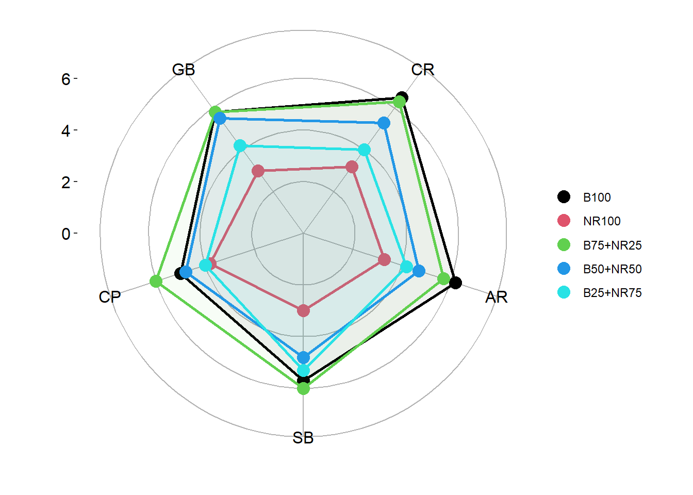
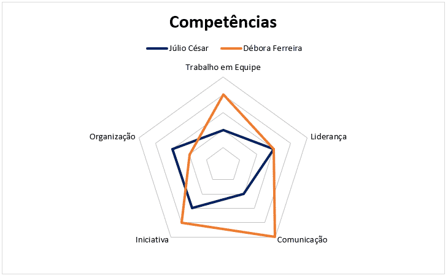
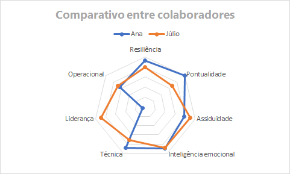

Nesta disciplina, embarcaremos em uma jornada emocionante pelo mundo da tecnologia, explorando sua fascinante história, seus avanços mais recentes e seu impacto em nossas vidas.
Ao longo do caminho, você terá a oportunidade de:
Desvendar os mistérios da tecnologia: Aprenderemos sobre os fundamentos da informática, desde o funcionamento básico dos computadores até as complexas redes que conectam o mundo.
Descobrir as inovações que moldam nosso presente: Exploraremos as tecnologias emergentes que estão revolucionando a sociedade, como inteligência artificial, robótica, internet das coisas e muito mais.
Rodape
Copyright © 2024